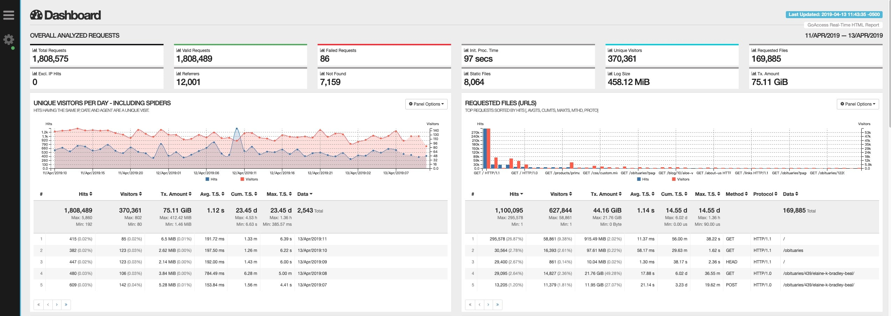

简单明了的多维度分析 Nginx 日志工具
GoAccess 是一款开源的且具有交互视图界面的实时 Web 日志分析工具，通过你的 Web 浏览器或者 *nix 系统下的终端程序(terminal)即可访问。能为系统管理员提供快速且有价值的 HTTP 统计，并以在线可视化服务器的方式呈现。GoAccess 解析指定的 Web 日志文件并将统计结果输出到 X 终端。
1. 功能特点
描述: 终端输出仅仅是默认的输出方式，
GoAccess还支持生成完整的实时HTML报告(这对分析、监控以及数据可视化都是极好的)，以及JSON和CSV格式的报告。
- [1] 完全实时
- 所有面板以及指标均按照指定时间间隔更新，在终端(
Terminal)下是200ms，HTML则是每秒。
- 所有面板以及指标均按照指定时间间隔更新，在终端(
- [2] 支持几乎所有 Web 日志格式
- 允许任意自定义日志格式，可预定义的格式包括：
Apache,Nginx等等。
- 允许任意自定义日志格式，可预定义的格式包括：
- [3] 跟踪应用响应时间
- 跟踪处理请求的时间消耗，对于解决站点页面访问速度下降非常有用。
- [4] 增长日志处理
- 需要持续保持数据，
GoAccess有能力处理在磁盘上以B+Tree数据库存储并且不断增长的日志。
- 需要持续保持数据，
- [5] 仅依赖一个模块
GoAccess是用C语言编写的，仅仅需要ncurses这一个模块即可运行。
- [6] 易于使用
- 可以直接运行
GoAccess去处理访问日志文件，仅需选取日志格式然后解析日志内容并将统计结果展示出来。
- 可以直接运行
- [7] 访客画像
- 可以按照小时或者指定日期确定最慢请求的访问次数，访客数量，带宽以及其他相关度量值。
- [8] 支持虚拟主机
- 拥有多个虚拟主机，在控制面板中能够显示出哪一个虚拟主机消耗
Web服务器上最多的资源。
- 拥有多个虚拟主机，在控制面板中能够显示出哪一个虚拟主机消耗
- [9] 配色风格可定制化
GoAccess的配色风格十分易于定制化，无论是通过终端，还是仅仅通过简单修改 HTML 页面的层叠样式表。
- [10] 来路站点
- 此面板将仅显示主机的部分，而不是完整的
URL。
- 此面板将仅显示主机的部分，而不是完整的
- [11] 访问次数
- 此面板按小时报告，因此将显示
24个数据点，每一个均对应每一天的某一个小时。
- 此面板按小时报告，因此将显示
- [12] 请求的文件
- 包含访问次数，独立访客数，百分比，累计消耗带宽，使用的协议，请求方式。
存储:
GoAccess支持三种类型的存储方式，请根据你的需要和系统环境进行选择。
- [1] 默认哈希表
- 内存哈希表提供较好的性能，缺点是数据集的大小受限于物理内存的大小，
GoAccess默认使用内存哈希表。
- 内存哈希表提供较好的性能，缺点是数据集的大小受限于物理内存的大小，
- [2] Tokyo Cabinet 磁盘 B+ 树
- 使用这种模式来处理巨大的数据集，大到不可能在内存中完成任务。
- [3] Tokyo Cabinet 内存哈希表
- 作为默认哈希表的替换方案，因为使用通用类型在内存表现以及速度方面都很平均。
配置:
GoAccess拥有多个配置选项，获取完整的最新配置选项列表。
| 编号 | 参数 | 对应含义 |
|---|---|---|
| 1 | --enable-debug |
使用调试标志编译且关闭编译器优化 |
| 2 | --enable-utf8 |
宽字符支持; 依赖 Ncursesw 模块 |
| 3 | --enable-geoip=x |
地理位置支持; 依赖 MaxMind GeoIP 模块 |
| 4 | --enable-tcb=x |
Tokyo Cabinet 存储支持 |
| 5 | --disable-zlib |
禁止在 B+Tree 数据库上使用 zlib 压缩 |
| 6 | --disable-bzip |
禁止在 B+Tree 数据库上使用 bzip2 压缩 |
| 7 | --with-getline |
使用动态扩展行缓冲区用来解析完整的行请求 |
| 8 | --with-openssl |
使 GoAccess 与其 WebSocket 服务器之间的通信能够支持 OpenSSL |
选项: 下面的选项可以通过命令行使用，如果是长选项则通过配置文件。
| 编号 | 参数 | 对应含义 |
|---|---|---|
| 1 | --time-format <timeformat> |
指定日志的时间格式; man strftime |
| 2 | --date-format <dateformat> |
指定日志的日期格式; man strftime |
| 3 | --log-format <logformat> |
用于指定日志字符串格式 |
| 4 | -c |
在程序开始运行时显示 日志/日期 配置窗口 |
| 5 | -i |
颜色高亮活动面板 |
| 6 | -m |
在主仪表盘面板使能鼠标支持 |
| 7 | --crawlers-only |
仅解析和显示爬虫 |
| 8 | --html-report-title=<title> |
设定 HTML 报告页面的标题和头部内容 |
| 9 | --json-pretty-print |
使用制表符和新行格式化 JSON 输出 |
| 10 | --port=<port> |
指定服务使用的端口 |
| 11 | --real-time-html |
使能实时 HTML 报告 |
| 12 | -f |
指定输入日志文件的路径 |
2. 安装方式
安装 GoAccess 非常的容易
- [1] 发行版上安装
# Debian/Ubuntu
# 添加官方的仓库源可以获取最新的稳定安装包
$ echo "deb http://deb.goaccess.io/ $(lsb_release -cs) main" | sudo tee -a /etc/apt/sources.list.d/goaccess.list
$ wget -O - https://deb.goaccess.io/gnugpg.key | sudo apt-key add -
$ sudo apt-get update
$ sudo apt-get install goaccess
# Fedora/CentOS
$ sudo yum install goaccess
# OSX/Homebrew
$ brew install goaccess
- [2] 编译安装
# 只需要下载、解压以及编译
$ wget https://tar.goaccess.io/goaccess-1.5.1.tar.gz
$ tar -xzvf goaccess-1.5.1.tar.gz
$ cd goaccess-1.5.1/
$ ./configure --enable-utf8 --enable-geoip=mmdb
$ make && make install
- [3] 通过 GitHub 构建
# 源代码构建的另一种方式
$ git clone https://github.com/allinurl/goaccess.git
$ cd goaccess
$ autoreconf -fiv
$ ./configure --enable-utf8 --enable-geoip=mmdb
$ make
# make install
- [4] 相关发行版安装包
# Ubuntu
$ sudo apt-get install goaccess
# CentOS
$ sudo yum install goaccess
3. 容器部署
一种更加快速、高效、便捷的部署方式 => 参考链接
- [1] 启动注意事项
在 Docker 容器中运行 GoAccess 之前，请先在 /srv/goaccess/data/ 目录下创建配置文件。 您可以自行从头开始或者使用 config/goaccess.conf 作为起点并根据需要进行修改。
一份最小化的支持实时 HTML 报告的适用于 Docker 容器的配置文件至少需要设置以下这些选项：log-format, log-file, output, real-time-html 以及 ws-url。在部署的时候，需要将 /var/log/apache2 替换成为自己的 Web 服务器的访问日志路径地址。如果一切顺利，一份安装报告将会出现在 /srv/goaccess/html/ 目录下。
- [2] 自行构建镜像
# 构建方式
$ curl -L "https://github.com/allinurl/goaccess/archive/refs/heads/master.tar.gz" | tar -xz && cd goaccess-master
$ docker build -t goaccess/build.debian-10 -f Dockerfile.debian-10 .
$ docker run -i --rm -v $PWD:/goaccess goaccess/build.debian-10 > goaccess
- [2] 部署启动运行
# 非实时查看
cat access.log | docker run --rm -i \
-e LANG=$LANG allinurl/goaccess \
-a -o html --log-format COMBINED - > report.html
# 实时查看
$ cat access.log | docker run --rm -i -p 7890:7890 \
-e LANG=$LANG allinurl/goaccess -a -o html \
--log-format COMBINED --real-time-html - > report.html
# 修改了配置文件只需重启容器即可
$ docker restart goaccess
- [3] 自定义日志格式
- 网上大部分说的都是使用
GoAccess解析固定的nginx-log_format格式 - 但是日常工作中，我们常常会自定义一些特殊的日志格式，这时就需要自定义日志格式了
- 网上大部分说的都是使用
# 自定义日志格式
log_format main '$remote_addr - $remote_user [$time_local] "$request" '
'$status $body_bytes_sent "$http_referer" '
'"$http_user_agent" "$http_x_forwarded_for" $upstream_addr $request_time';
# 解析后的日志格式 - goaccess.conf
time-format %T
date-format %d/%b/%Y
log-format %h - %^ [%d:%t %^] "%r" %s %b "%R" - %^"%u" - %^ %T
# 解析生成报告
goaccess -a -c -d -f /xxx/access.log -p /xxx/goaccess.conf > report.html
# 解析生成报告
cat access.log | docker run --rm -i \
-e LANG=$LANG allinurl/goaccess -a -o html \
--date-format=%d/%b/%Y --time-format=%H:%M:%S \
--log-format='%h - %^ [%d:%t %^] "%r" %s %b %^ %T %^ "%R" "%u"' \
- > report.html
- [4] 日志格式定义
- 原始的
log_format配置的字符中有一个空格，解析后的log_format就必须有一个空格
- 原始的
| 编号 | 日志格式 | 对应含义 | 字段是否必须 |
|---|---|---|---|
| 1 | %x |
匹配 time-format 和 date-format 变量的日期和时间字段 | - |
| 2 | %t - $time_local |
匹配 time-format 变量的时间字段 | - |
| 3 | %d - $time_local |
匹配 date-format 变量的日期字段 | 必须存在 |
| 4 | %v - $http_host |
根据 canonical 名称设定的服务器名称 | - |
| 5 | %e |
请求文档时由 HTTP 验证决定的用户 ID | - |
| 6 | %C |
服务器所服务对象的缓存状态 | - |
| 7 | %h |
主机(客户端 IP 地址，IPv4 或者 IPv6) | 必须存在 |
| 8 | %r - $request |
客户端请求的 URL 地址；获取完整的请求 | 必须存在 |
| 9 | %m |
请求的方法 | - |
| 10 | %U |
请求的 URL | - |
| 11 | %q |
查询字符串 | - |
| 12 | %H - $remote_addr |
请求协议 | - |
| 13 | %s - $status |
服务器回传客户端的状态码 | - |
| 14 | %b - $body_bytes_sent |
回传客户端的对象的大小 | - |
| 15 | %R - $http_referer |
HTTP 请求的 “Referer” 值 | - |
| 16 | %u - $http_user_agent |
HTTP 请求的 “UserAgent” 值 | - |
| 17 | %K |
选择的 TLS 加密设置 | - |
| 18 | %k |
选择的 TLS 加密设置 | - |
| 19 | %M |
所请求资源的 MIME 类型 | - |
| 20 | %D |
处理请求的时间消耗；使用微秒计算 | - |
| 21 | %T - $request_time |
处理请求的时间消耗；使用带秒和毫秒计算 | - |
| 22 | %L |
处理请求的时间消耗；使用十进制数表示的毫秒计算 | - |
| 23 | %^ |
忽略此字段 | - |
| 24 | %~ |
继续解析日志字符串直到找到一个非空字符 | - |
| 25 | ~h |
在 X-Forwarded-For 字段中的主机 | - |
4. 使用方式

- [1] 操作热键
F1或h 主帮助页面
F5 重绘主窗口
q 退出程序;当前窗口或者崩溃了的模块
o或ENTER 扩展选中的模块或打开窗口
0-9和Shift+0 激活选中的模块
j 在已扩展模块中向下滚动
k 在已扩展模块中向上滚动
c 设置或者改变配色方案
^f 在当前模块中向前滚动一屏
^b 在当前模块中向后滚动一屏
TAB 切换模块(向前)
SHIFT+TAB 切换模块(向后)
s 给活跃模块的选项排序
/ 在所有模块中搜索(支持正则)
n 找到下次发生事件的位置
g 移动到第一个选项或者屏幕顶部
G 移动到第最后一个选项或者屏幕底部
- [2] 不同的输出
# 输出到终端且生成一个可交互的报告
$ goaccess access.log
# 生成一份HTML报告
$ goaccess access.log -a -o report.html
# 生成一份JSON报告
$ goaccess access.log -a -d -o report.json
# 生成一份CSV文件
$ goaccess access.log --no-csv-summary -o report.csv
# GoAccess非常灵活，支持实时解析和过滤; 例如，需要通过监控实时日志来快速诊断问题
$ tail -f access.log | goaccess -
# 更厉害的是还可以使用 tail -f 和一个模式匹配工具一起工作; 比如: grep,awk,sed 等等
$ tail -f access.log | grep -i --line-buffered 'firefox' | goaccess --log-format=COMBINED -
# 又或者可以在管道打开的状态下从头开始解析文件，并同时应用一个过滤器
$ tail -f -n +0 access.log | grep --line-buffered 'Firefox' | goaccess -o out.html --real-time-html -
# 提示没有设置time-format日志的时间格式
[escape@localhost] $ sudo tail -f /var/log/nginx/app.nginx.access.log | goaccess -
GoAccess - version 1.2 - Mar 11 2019 02:39:35
Config file: /etc/goaccess.conf
Fatal error has occurred
Error occured at: src/goaccess.c - set_curses - 1394
No time format was found on your conf file.
# 获取配置文件路径
[escape@localhost] $ sudo goaccess --dcf
# 需要根据我们的日志格式进行对应的日期格式调整
[escape@localhost] $ sudo vim /etc/goaccess.conf
time-format %H:%M:%S
date-format %d/%b/%Y
log-format %h %^[%d:%t %^] "%r" %s %b "%R" "%u"
%% 一个文字的 %
%a 当前locale 的星期名缩写(例如：日，代表星期日)
%A 当前locale 的星期名全称 (如：星期日)
%b 当前locale 的月名缩写 (如：一，代表一月)
%B 当前locale 的月名全称 (如：一月)
%c 当前locale 的日期和时间 (如：2005年3月3日 星期四 23:05:25)
%C 世纪；比如 %Y，通常为省略当前年份的后两位数字(例如：20)
%d 按月计的日期(例如：01)
%D 按月计的日期；等于%m/%d/%y
%e 按月计的日期，添加空格，等于%_d
%F 完整日期格式，等价于 %Y-%m-%d
%g ISO-8601 格式年份的最后两位 (参见%G)
%G ISO-8601 格式年份 (参见%V)，一般只和 %V 结合使用
%h 等于%b
%H 小时(00-23)
%I 小时(00-12)
%c 按年计的日期(001-366)
%k 时(0-23)
%l 时(1-12)
%m 月份(01-12)
%M 分(00-59)
%n 换行
%N 纳秒(000000000-999999999)
%p 当前locale 下的"上午"或者"下午"，未知时输出为空
%P 与%p 类似，但是输出小写字母
%r 当前locale 下的 12 小时时钟时间 (如：11:11:04 下午)
%R 24 小时时间的时和分，等价于 %H:%M
%s 自UTC 时间 1970-01-01 00:00:00 以来所经过的秒数
%S 秒(00-60)
%t 输出制表符 Tab
%T 时间，等于%H:%M:%S
%u 星期，1 代表星期一
%U 一年中的第几周，以周日为每星期第一天(00-53)
%V ISO-8601 格式规范下的一年中第几周，以周一为每星期第一天(01-53)
%w 一星期中的第几日(0-6)，0 代表周一
%W 一年中的第几周，以周一为每星期第一天(00-53)
%x 当前locale 下的日期描述 (如：12/31/99)
%X 当前locale 下的时间描述 (如：23:13:48)
%y 年份最后两位数位 (00-99)
%Y 年份
%z +hhmm 数字时区(例如，-0400)
%:z +hh:mm 数字时区(例如，-04:00)
%::z +hh:mm:ss 数字时区(例如，-04:00:00)
%:::z 数字时区带有必要的精度 (例如，-04，+05:30)
%Z 按字母表排序的时区缩写 (例如，EDT)
- [3] 多日志文件
# 最简单的方法是直接将多个文件通过命令行传给GoAccess
$ goaccess access.log access.log.1
# 甚至在正常读取文件的时候也可以同时通过管道解析文件
# 注意添加到命令行末尾的破折号是为了告诉GoAccess应该从管道中读取数据
$ cat access.log.2 | goaccess access.log access.log.1 -
# 要更加灵活的使用GoAccess我们可以使用一系列的管道
# 例如我们希望处理所有压缩过的日志文件access.log.*.gz并附加到当前日志文件中
$ zcat access.log.*.gz | goaccess access.log -
- [4] 实时 HTML 输出
# GoAccess有能力在HTML报告中展示实时数据
# 您甚至可以通过电子邮件发送HTML报告，因为它是由没有外部文件依赖的单个文件组成
# 生成实时HTML报告的过程和生成静态报告的过程非常相似
# 实时报告仅仅需要使用参数 --real-time-html
$ goaccess access.log -o /usr/share/nginx/html/site/report.html --real-time-html
# GoAccess默认使用生成报告的主机名
# 您也可以指定URL用于客户端浏览器访问
$ goaccess access.log -o report.html --real-time-html --ws-url=goaccess.io
# GoAccess默认侦听端口7890
$ goaccess access.log -o report.html --real-time-html --port=9870
# 绑定WebSocket服务器到不同于0.0.0.0的另外一个地址
# 如果需要在加密连接上输出实时数据，则需要使用--ssl-cert=<cert.crt>和--ssl-key=<priv.key>
$ goaccess access.log -o report.html --real-time-html --addr=127.0.0.1
- [5] 日期处理
# 另一个强大的管道应该是从 Web 日志中过滤日期。
# 下面的命令将获取从 05/Dec/2010 开始并直到文件结束的所有的 HTTP 请求
$ sed -n '/05\/Dec\/2010/,$ p' access.log | goaccess -a -
# 或者使用相对日期，比如昨天或者明天
$ sed -n '/'$(date '+%d\/%b\/%Y' -d '1 week ago')'/,$ p' access.log | goaccess -a -
# 如果需要解析一个固定的时间段，则可以这样写
$ sed -n '/5\/Nov\/2010/,/5\/Dec\/2010/ p' access.log | goaccess -a -
- [6] 虚拟主机
# 假定您的日志中包含虚拟主机字段。比如
vhost.com:80 10.131.40.139 - - [02/Mar/2016:08:14:04 -0600] "GET /shop/bag-p-20 HTTP/1.1" 200 6715 "-" "Apache (internal dummy connection)"
# 并且您希望查看最高访问量的 URL 属于哪一台虚拟主机
$ awk '$8=$1$8' access.log | goaccess -a -
# 当然，您可以可以排除不想看的虚拟主机
grep -v "`cat exclude_vhost_list_file`" vhost_access.log | goaccess -
- [7] 文件 & 状态码
# 解析特定页面，比如：页面访问数，html，htm，php，等等
$ awk '$7~/\.html|\.htm|\.php/' access.log | goaccess -
$ tail -10 access.log | awk '{print $8}'
# 或者解析一个特定的状态码，比如：500(服务器内部错误)
$ awk '$9~/500/' access.log | goaccess -
- [9] 服务器
# 如果希望GoAccess运行在一个较低优先级，可以这样做
$ nice -n 19 goaccess access.log -a
# 如果您不希望在服务器上安装GoAccess，那在本地机器运行就好了
$ ssh root@server 'cat /var/log/apache2/access.log' | goaccess -a -
- [9] 处理不断增长中的日志
# GoAccess通过磁盘B+树数据库能够处理不断增长的日志，工作原理如下：
# 首先数据集必须使用--keep-db-files参数保存，然后相同的数据集可以使用参数--load-from-disk载入
# 收到新的数据(来自管道或者文件)后，将会被附加到原始数据集上
# 在任何时候都保存数据， 则必须使用--keep-db-files参数
# 果在使用参数--load-from-disk时没有同时使用--keep-db-files参数，则数据库文件在程序关闭时将会被删除
# 示例: 上个月的访问日志
$ goaccess access.log.1 --keep-db-files
# 然后载入，添加这个月的新日志，并保存为新数据
$ goaccess access.log --load-from-disk --keep-db-files
# 读取已经保存的数据(不解析新数据)
$ goaccess --load-from-disk --keep-db-files
5. 参考地址
送人玫瑰，手有余香！